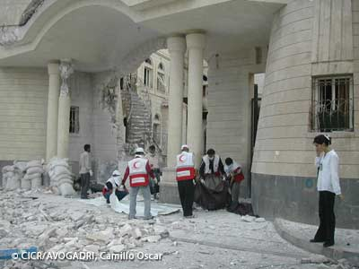

Le principe de proportionnalité

Le droit international humanitaire, qui se veut réaliste, admet que durant l’attaque d’un objectif militaire, il puisse y avoir des conséquences incidentes sur des personnes ou des biens civils. Cependant, pour être licite, une attaque doit répondre à une condition de proportionnalité.
Cela signifie que l’avantage militaire concret et direct attendu de l’attaque en question doit être supérieur aux pertes en vies civiles et en dommages civils que l’on peut raisonnablement attendre de l’opération.
L’équation proportionnelle ne dépend pas du résultat effectif de l’action, mais bien de l’évaluation qui est faite au moment de la planification de l’attaque, avant le lancement de l’attaque en fonction des informations disponibles au moment de l’attaque.
De ce fait, au moment de la planification d’une attaque, le belligérant devra calculer le rapport entre l’avantage militaire attendu, d’une part, et les pertes et dommages civils prévisibles, d’autre part. Il devra renoncer à l’opération militaire projetée chaque fois que le rapport est nettement en défaveur des personnes civiles ou des biens civils.
Afin de respecter le principe de proportionnalité, les parties aux conflits doivent prendre toutes les précautions possibles pour réduire les pertes en vies humaines et les dommages aux biens de caractère civil.
Ainsi l’attaquant doit :
- faire tout ce qui est pratiquement possible pour vérifier que les objectifs à attaquer ne sont ni des personnes civiles, ni des biens de caractère civil ;
- prendre toutes les précautions pratiquement possibles quant au choix des moyens et méthodes d’attaque en vue d’éviter ou à tout le moins de réduire au minimum les pertes en vies humaines dans la population civile, les blessures aux personnes civiles et les dommages aux biens de caractère civil qui pourraient être causés incidemment ;
- annuler ou interrompre une attaque lorsqu’il apparaît que son objectif n’est pas militaire ou qu’il bénéficie d’une protection spéciale ou que l’on peut attendre qu’elle cause incidemment des pertes civiles ou des dommages civils qui seraient excessifs ;
- lorsque l’attaque projetée peut affecter la population civile, donner un avertissement en temps utile et par des moyens efficaces, à moins que les circonstances ne le permettent pas ;
- opter, lorsque le choix est possible entre plusieurs objectifs militaires pour obtenir un avantage militaire équivalent, pour l’objectif dont on peut penser que l’attaque présente le moins de danger pour les personnes civiles ou pour les biens de caractère civil.
Ainsi l’attaqué doit :
- éloigner du voisinage des objectifs militaires la population civile, les personnes civiles et les biens de caractère civil ;
- éviter de placer les objectifs militaires à l’intérieur ou à proximité des zones fortement peuplées ;
- prendre les précautions nécessaires pour protéger contre les dangers résultant des opérations militaires la population civile, les personnes civiles et les biens de caractère civil soumis à son autorité ;
- si cela est impossible, évacuer la population civile en danger ou créer des zones de refuge.
| Résumé | |
Au moment de la planification de l’attaque
Avantage militaire / pertes et dommages civils
Respect du principe de proportionnalité
L’attaque peut être lancée

Au moment de la planification de l’attaque
Avantage militaire / pertes et dommages civils
Violation du principe de proportionnalité
L’attaque doit être annulée et repensée
pour se conformer au principe de proportionnalité
(notamment en prenant les précautions imposées par le DIH)
| Sources |
- Premier Protocole additionnel aux Conventions de Genève, 1977 :
- article 51 (5) (b) : principe de proportionnalité
- article 57 : précautions à prendre par l’attaquant
- article 58 : précautions à prendre par l’attaqué - Droit international coutumier :
- règle 14 : principe de proportionnalité
- règles 15 à 21 : précautions à prendre par l’attaquant
- règles 22 à 24 : précautions à prendre par l’attaqué